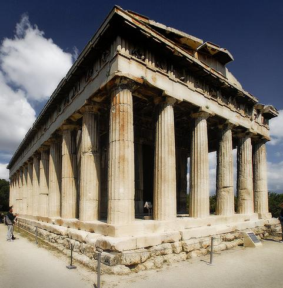
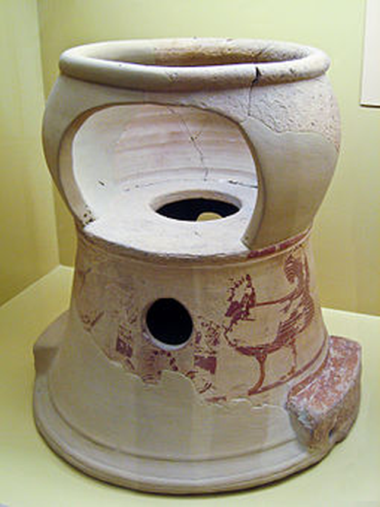
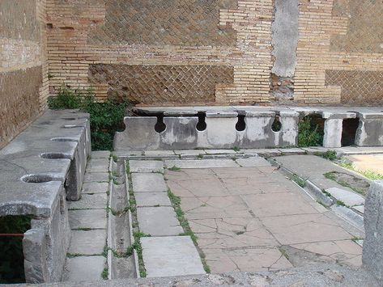
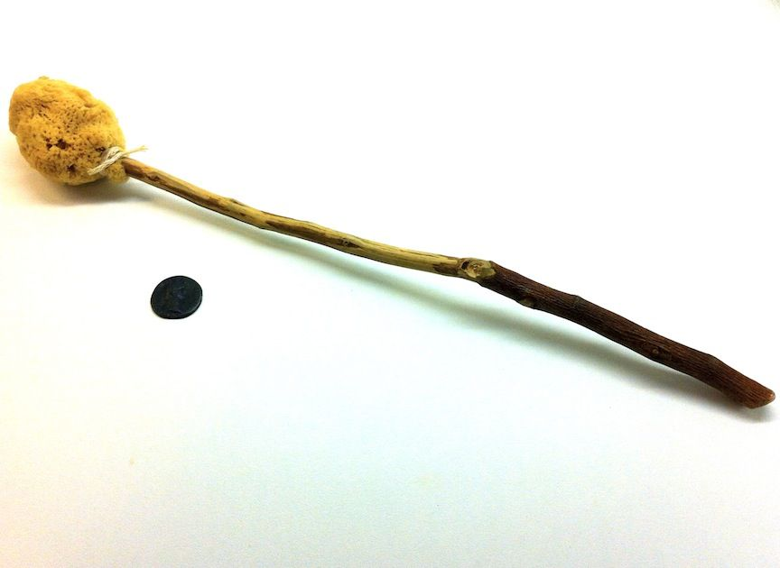
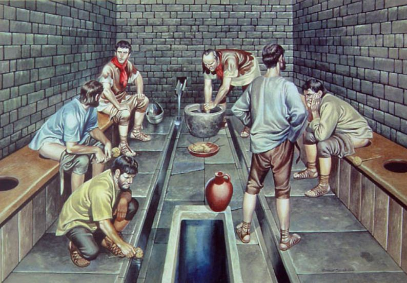
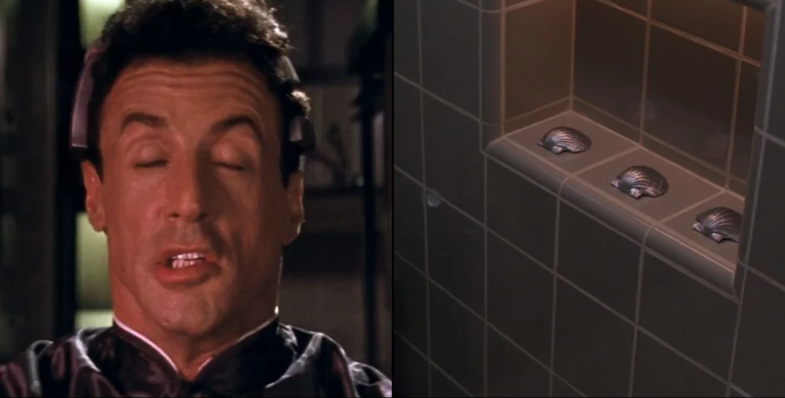
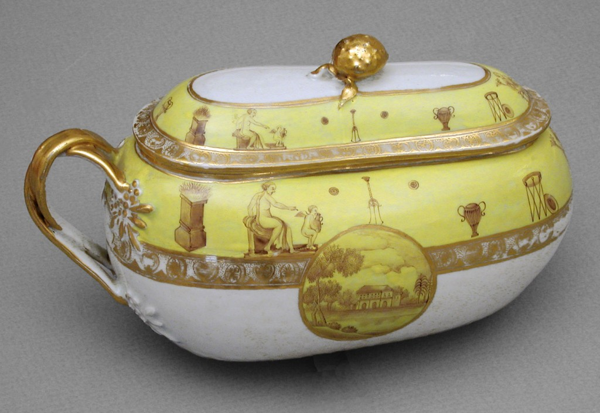
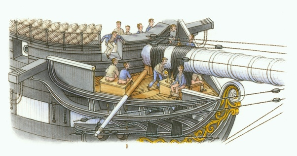
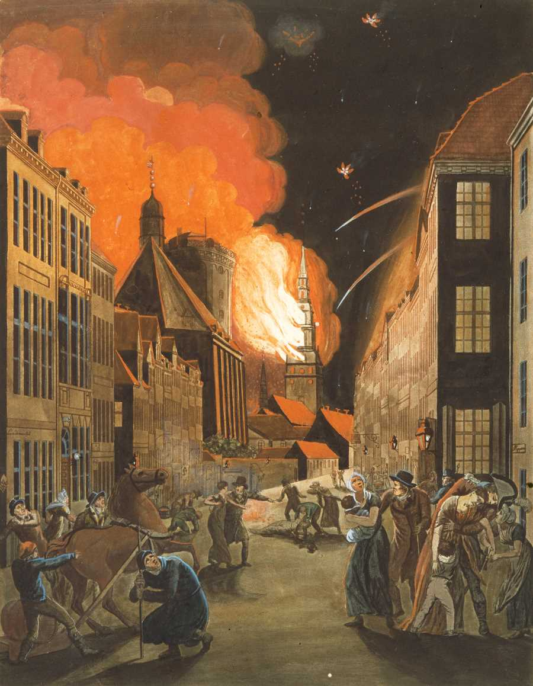

화장실 이야기 - 고대 그리스에서 나폴레옹까지
게시: 2019-12-05T06:30:52+09:00
서양 사람들은 고대 그리스를 '꿈의 나라'라고 하며 동경합니다. 서양의 문화적 토대가 처음으로 이루어졌고, 또 민주주의의 시발점이었다는 것이지요. 실제로 고대 그리스가 그런 꿈의 나라였는지는 모르겠습니다만, 그런 소리를 들으면 엉뚱한 생각이 들기도 합니다. 그런 곳에서는 화장실이 어땠을까 ? 간단히 말하면 이나영이나 한예슬도 화장실에 갈까 정도의 생각이지요.

답부터 말하자면, 고대 그리스의 도시 중 그래도 가장 화려하고, 또 가장 잘 발굴된 도시인 아테네에도, 공중 화장실은 없었습니다. 또 집집마다 화장실이라고 할 만한 것이 따로 있지는 않았다고 합니다. 그렇다면 아테네인들은 어떻게 용변을 보았을까요 ? 뭐, 뻔하지 않습니까 ? 요강을 썼습니다. 영어로는 chamber pot 이라고 하지요. 헬라어로는 뭐라고 하는지 모르겠습니다. 이 요강이라는 편리한 휴대용 변기는 19세기까지도 유럽 전역에서 매우 편리하게 사용되었습니다. 그래도 아테네에서는 18세기 유럽처럼, 간밤에 요강에 쌓인 내용물(영어로는 night soil이라고 하더군요)을 길바닥에다가 마구 내다버리지는 않았던 모양입니다. 그런 것을 수거해다가 정해진 곳에 내다버리는 노예가 따로 있었다고 합니다.

(고대 그리스에서 유아용으로 썼던 요강 겸 좌변기랍니다. 측면의 저 넓은 구멍으로 아이의 다리를 내놓은 듯 해요.)
사실 화장실이라는 문화는 상하수도와 밀접하게 연관이 되어 있습니다. 아테네에는 상하수도 시스템은 없었습니다. 대신 우물보다는 훨씬 세련된, 그러니까 멋진 조각으로 장식된 공공 수도꼭지 비슷한 것이 있었습니다. 여기서 물을 암포라 같은 토기 항아리에 길어서 집집마다 가져가는 것은 (물 항아리가 무척 무거울텐데도) 여자 노예의 몫이었다고 합니다. 물론 서민층은 주부가 직접 길었겠지요. 남자들이요 ? 남자들은 그런 거 안했답니다. 아고라나 장터에 가서 토론이라는 미명하에 수다를 떨었지요. 희안하게도 장보는 것은 또 남자들의 몫이었다고 하네요. 남자들이 시장에 가서 동료 시민들과 만나 실컷 수다를 떨고나서, 손에 생선이나 올리브 같은 것을 들고 오는 광경을 생각해보십시요. 우습나요 ? 전 사실 부럽습니다. 시대가 좀더 흘러 로마시대가 되면, 로마 뿐만 아니라, 웬만한 대도시에는 상하수도 시스템이 생기면서, 수세식 공공 화장실이 생깁니다. 아래 것은 폼페이에서 발견된 공공 화장실인데, 좌변기 아래에 물이 흐르게 되어있어 '투하물'이 흐르는 물에 쓸려가게 되어 있습니다. 현재의 터키 해안지방인 사르디스나 에페소스 등에서도 이런 로마식 공중 화장실이 발견됩니다.

당시 로마 사람들에게는 용변 보는 모습이 서로에게 흉이 되지는 않았던 모양입니다. 칸막이 같은 것은 없었습니다. 이게 원래 서양의 풍습인지는 모르겠습니다만, 현대 미국의 공공 화장실은 칸막이가 상당히 개방적입니다. 즉 옆자리와 칸막이가 있기는 있으나, 발목이 다 보이도록 아래 쪽이 뻥 뚫려있지요. 우리나라 사람들이 가서 사용하면, 약간 불안한 느낌이 들 정도입니다. 듣기로는 화장실 칸 안에서의 범죄를 막기 위해서라고도 하더군요. 저도 폼페이에 관광 가서 저 공중 화장실을 봤던 것을 기억나는데, '유로 자전거나라'의 여성 가이드분께서 설명하시길 여기에는 남녀 화장실 구분이 없었고, 시민들의 쾌적한 볼 일을 위해 화장실 가운데에서는 시에서 고용한 가수가 노래를 불렀다고 설명하시더군요. 각 가정에서는 어땠을까요 ? 물론 부자집과 가난한 집이 사정이 틀렸습니다. 부자집에서는 공공 화장실에서 처럼, 좌변기 아래에 흐르는 물이 있어서 수세식이었고, 그냥 중산층 가정에서는 '투하물'이 웅덩이에 그냥 모이게 했다가 정기적으로 퍼내갔다고 합니다. 비용은 집주인이 부담해야 했다고 합니다. 소위 말하는 '푸세식'이었던 것이지요. 퀴즈 하나. 로마 가정집에서 화장실의 위치는 어디였을까요 ? 다소 충격적입니다. 주방입니다. 주방에 좌변기가 떡 하니 있었습니다. 물과 화장실이 밀접한 관계라는 것을 생각해보면, 당연한 이야기일 수도 있습니다. 주방의 허드렛물로 '투하물'을 쓸어내리곤 했답니다. 그래도 옆에서 음식을 하고 있는 하녀 옆에서 칸막이도 없는 좌변기에 앉아 응아를 하는 모습은 그리 청결해보이지는 않습니다.... 퀴즈 둘. 화장실에서 용변을 보고 난 뒤, 휴지는 뭘 썼을까요 ? 고대 아테네의 사정은 잘 모르겠습니다. 로마에서는 스폰지, 즉 해면을 썼습니다. 한 30cm 길이의 막대기 끝에 둥근 해면을 달아놓았는데, 공공 화장실에서는 이걸로 뒤를 닦고 소금물이나 식초물이 든 양동이에 다시 넣어놓았다고 합니다. 그걸 다른 사람이 물로 대충 행궈서 또 뒤를 닦고... 으윽.
 
참고로, 최초의 종이는 AD 105년인가에 한나라에서 발명되었습니다. 또 최초의 종이로 된 화장지도 중국에서 썼다고 합니다. 598년인가에 어떤 중국인 학자가, '성현의 말씀이 적힌 종이는 도저히 화장지로 쓸 수가 없다'라고 적어놓은 것이, 최초의 종이 화장지의 존재를 증명한다고 하는군요. 또 9세기 당나라를 찾은 이슬람 학자가 써놓은 기록에 보면, '중국인들은 위생관념이 없다. 용변을 보고나서 손과 물로 깨끗이 닦지않고, 종이로 쓰윽 닦고 만다' 라는 기록이 있습니다. 그렇다면 유럽에서는 어떤 걸 화장실 대용으로 썼을까요 ? 16세기경에 이미 종이를 화장지로 썼다는 기록이 있기는 합니다만, 그보다는 주로 삼, 헝겊조각, 양털, 짚, 나뭇잎, 풀, 나무껍질, 모래, 물, 눈, 돌, 조개껍질 등등 손에 잡히는 건 아무거나 다 썼다고 합니다. 그런데 조개껍질은 대체....??? 실베스터 스탤론과 웨슬리 스나입스, 그리고 산드라 블록이 나온 영화 "데몰리션 맨"에서도 이 조개껍질 이야기가 나옵니다. 냉동되었다가 100년 후인가의 미래에서 깨어난 실베스터 스탤론이 화장실에 가는데, 휴지는 없고 대신 "three sea shell"이라고 하는 조개 모양의 물건 세개가 나란히 놓인 것을 보고 난감해하는 장면이 있지요. 그 사용법은 저도 정말 궁금했는데, 영화 맨 마지막 장면이 바로 스탤론이 산드라 블록에게 "대체 그 조개는 어떻게 사용하는거냐" 라고 묻는 것이었지요.

일본은 전통적으로 새끼줄을 앞뒤로 잡고 쓱쓱 했다고 해서 우리나라 사람들의 조롱을 많이 받습니다. 하지만 우리나라도 뭐 그리 우아하지는 않았답니다. 껍질을 벗긴, 얇은 나무 막대기로 뒤처리를 하고 씻어서 뒷간 한쪽에 세워놓았다는데요 ? 로마 제국이 망한 뒤, 중세 암흑기를 거친 유럽은 르네상스 시대를 맞이하면서 비로소 요즘 나오는 '뽀스'를 좀 드러내기 시작합니다. 프랑스의 경우 "짐이 곧 국가니라. (L'ete, c'est moi.)"라고 말했다는 루이 14세가 베르사이유 궁전을 세우면서 예술과 문화의 나라로서의 행보가 본격화됩니다. 자, 베르사이유 궁전의 화장실은 또 어땠을까요 ? 이건 다들 아실 겁니다. 역시 정답은 한마디로 '그런거 없다' 입니다. 그러니까 당시에는 화장실이라는 개념 자체가 없었던 것이지요. 다만 요강, 즉 chamber pot이 있었습니다. 뭐 베르사이유 궁전에는 화장실이 없어서 거기 정원에 있는 덤불 숲이 원래 화장실이다 뭐다 그런 말들이 있는데, 그건 사실과는 좀 다르다고 합니다. '요강'이 있으니까요. 하지만, 루이 14세가 왕권 강화를 위해 매일 밤 무도회를 열었다는데, 그 많은 사람들이 모두 요강을 들고 왔을 것 같지는 않습니다. 또 요강을 들고 왔다고 하더라도, 하인들이 그 내용물을 집에 들고 갔을 것 같지는 않고, 결국 정원 덤불 숲에 버렸을테니, 결국은 그게 그거 같기도 하군요.

(이런 예쁜 여성용 요강을 bourdaloue '부르달루'라고 부른답니다. 영어에는 없는 표현이라서 프랑스어 사전을 찾아보니 '드문 남자 이름' 이라는 설명과 함께 '요강'이라는 뜻이 있더군요. 카더라 통신에 따르면 Louis Bourdaloue라는 이름의 유명한 예수회 신부가 하도 설교를 오래 하는 바람에 숙녀분들이 옆 방에서 잠시 용변을 해결할 수 있도록 이런 물건이 만들어졌다고 합니다. 이 물건을 사용하는 모습을 그린 바로크 양식의 유화가 있긴 한데... 너무 노골적이라 전재하지 않습니다. 꼭 보고 싶으신 분은 https://georgianera.wordpress.com/2015/11/10/what-was-a-bourdaloue/ 클릭.)
방 안에서 요강에다 응아나 쉬를 하면 당연히 악취가 날 것입니다. 따라서 당시 요강에는 뚜껑이 달려있었고, 또 뚜껑을 덮기 전에 천을 덮어서 악취가 새어나오지 못하게 했습니다. 무엇보다, 주인님이 응아나 쉬를 하고 나면 하인이 곧장 내용물을 내다 버렸습니다. 영국이 나폴레옹을 상대로 힘겨운 전쟁을 꾸려나갈 때, 그 전쟁 자금을 대주었다는 로스차일드의 집무실에도, 따로 화장실이 없었던 것이 확실한 모양입니다. 어느 책에서 보았는데, 로스차일드 집무실 문이 열리고 그 안에서 집사가 거만한 표정으로 요강을 들고 나오자, 그 앞에 진을 치고 앉아있던 많은 청원자들이 마치 성물이라도 본 것처럼 경외하는 눈빛으로 그 요강을 쳐다보았다고 합니다. 당시의 군함이나 상선의 경우, 난간에 간단한 구멍뚫린 좌석이 있었고, 그게 화장실이었습니다. 영어로는 그런 화장실을 'head'라고 불렀습니다. 왜 화장실을 하필 head라고 불렀는지는 간단히 설명됩니다. 당시 범선의 원리상, 당연히 바람은 배의 뒤쪽에서 불어왔으므로 선원들이 응아한 것이 배의 측면에 불러붙는 끔찍한 사태를 피하려면 화장실이 이물, 즉 배의 앞쪽에 있어야 했습니다. 따라서 그냥 '뱃머리에 간다'라는 말이 화장실 간다는 말과 동의어로 쓰이면서 화장실을 head라고 부르게 되었답니다.

선장실에는 따로 화장실이 있었는데, 역시 '투하물'은 그대로 바다로 떨어지게 되어 있었습니다. 특별히, 환자들을 위한 방에는 역시 화장실이 따로 있었습니다. 폭풍이 몰아치는 추운 밤에 환자보고 난간에 매달려 용변을 보라는 건 좀 잔인했기 때문이었지요. 일반 여객선의 경우, 대개 '난간 화장실'을 쓰지 않고 역시 요강을 썼습니다. 특히 여자들의 경우 선원들 앞에서 용변을 볼 수는 없었겠지요. 남자 승객들도 파도가 심한 날에 '난간 화장실'을 쓰는 경우 바다에 추락할 위험이 많았습니다. 위와 같이 선박인 경우는 드넓은 바다가 '투하물'을 처리해주었으니 차라리 위생적이었습니다. 문제는 대도시인 경우, 요강의 '내용물'을 어디다 버리느냐입니다. 답은 다들 아시지요 ? 그냥 길바닥에 버렸습니다. 1807년, 나폴레옹 전쟁의 복잡한 국제 관계로 인해, 영국은 엉뚱하게도 나폴레옹과 대립하던 덴마크 왕국을 공격하게 되었습니다. 당시 덴마크 왕국에게는 아담한 규모의 멋진 함대가 있었는데, 트라팔가 해전에서 함대를 모두 말아드신 나폴레옹께서 그 함대를 탐냈습니다. 그냥 이대로 가만히 있다가는 힘없는 덴마크가 나폴레옹에게 함대를 빼앗길 것 같다는 판단을 한 영국은, 덴마크에게 매우 거만한 요구를 하게 됩니다. '그 함대를 내놓아라. 그러면 우리가 잘 보관했다가 좋은 시절이 오면 되돌려주마.' 덴마크도 엄연한 주권국가인데, '예, 그러시지요' 라고 할 수는 없었습니다. 이를 거부하자, 기다렸다는 듯이 영국 육해군이 코펜하겐을 포위하고는 바다와 육지에서 곡사포로 포격을 시작했습니다. 이 사건은 소위 '자위적 선제 공격'으로도 유명하고, 또 백인들끼리의 전쟁에서 최초로 민간인 거주 지역에 무차별 포격을 가한 최초의 사건으로도 유명한 일입니다.

이때 코펜하겐에는 Eckersberg라는 화가가 살고 있었는데, 이 사람의 집에도 곡사포에서 발사된 폭탄 하나가 지붕을 뚫고 날아들어왔습니다. 이 화가는 급한 김에 요강을 들어 그 내용물로 폭탄의 도화선에 붙은 불을 껐다고 합니다. 나중에 이 화가는 1807년의 코펜하겐 폭격 사건을 목판화로 남겼는데, 그것이 바로 위의 그림입니다.
그래도 명색이 나폴레옹 블로그인데 나폴레옹이 등장하는 화장실 일화가 하나는 있어야겠지요 ? 나폴레옹이 퐁텐블로에서 퇴위 조서에 서명한 뒤 1차로 폐위되어 엘바 섬에 유폐되었지요. 사실 거기에 간 형태는 엘바 섬에 죄수로 간 것은 아니고 엘바 섬의 군주로 봉해져서 것이었습니다. 20년 넘게 파리에서 권좌를 누리다가 간 나폴레옹의 눈에 엘바 섬과 같은 촌동네가 얼마나 한심해 보였겠습니까 ? 나폴레옹이 엘바 섬에 도착해서 배에 내린 뒤 처음 내린 명령이 '이 동네에 화장실을 만들라, 악취가 난다' 라는 것이었다고 합니다. 제가 이 이야기를 어디서 읽었는지 기억이 안 납니다만, 저는 그게 사실은 아닐 거라고 생각합니다. 당시 유럽 대도시는 어디나 다 요강 내용물의 냄새가 났을테니까요.
Source : https://eaglesanddragonspublishing.com/tag/sponge-on-a-stick/
https://www.pinterest.jp/pin/535717318145424968/
https://en.wikipedia.org/wiki/Chamber_pot
https://georgianera.wordpress.com/2015/11/10/what-was-a-bourdaloue/